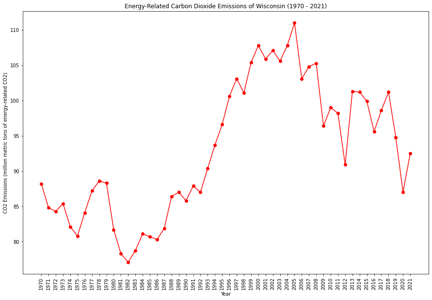
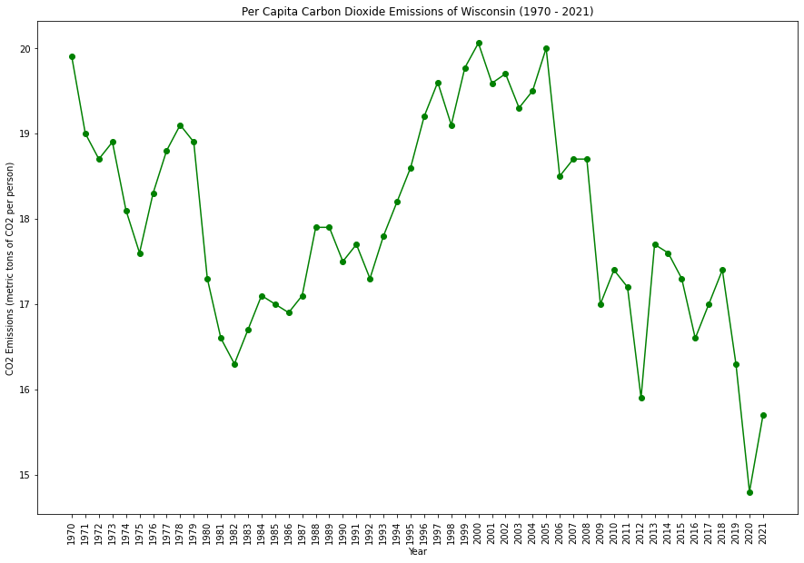
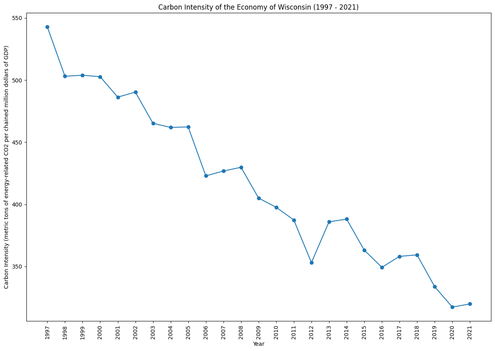
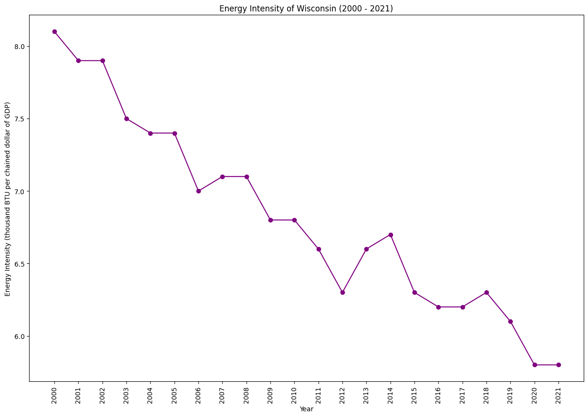

|  |  |
|  |  |
Wisconsin has been working to diversify its energy sources, with a focus on renewables and energy efficiency. Challenges include managing agricultural runoff affecting water quality and addressing the impacts of extreme weather events. The state continues to explore sustainable practices in various sectors.